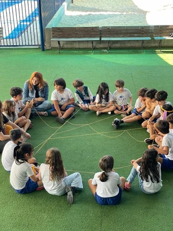

Aprendizagem acompanhada
A lição de casa é realizada na escola de forma orientada, com acompanhamento pedagógico.
Um dia de experiências que conectam aprendizagem, convivência, movimento e criatividade.
Conversar sobre o Integral
A proposta do Integral amplia as oportunidades de aprendizagem e diálogo. As experiências são articuladas ao projeto pedagógico e conduzidas por profissionais qualificados.
A lição de casa é realizada na escola de forma orientada, com acompanhamento pedagógico.
Histórias e diferentes formas de ler convidam a imaginar, compartilhar ideias e ampliar o repertório.
Oficinas que abrem espaço para a expressão, a criatividade e novas formas de perceber o mundo.
Atividades como dança livre, jiu-jítsu e natação integram a proposta apresentada pela escola. Consulte a programação de cada turma.
As atividades buscam estimular a coordenação motora, a sociabilidade, os valores e o pensamento de forma lúdica e responsável.
Converse com a equipe para conhecer as turmas atendidas, os horários, a alimentação, as atividades disponíveis e as condições de participação no Integral.
Tirar dúvidas sobre o IntegralSim. A proposta inclui acompanhamento pedagógico para a realização orientada da lição de casa na escola.
A equipe da escola orienta sobre a rotina de cada turma, as atividades oferecidas e a disponibilidade. Agende uma conversa pelo WhatsApp.
Venha conhecer nossa proposta, conversar com a equipe e sentir de perto o que faz parte do dia a dia CEABA.